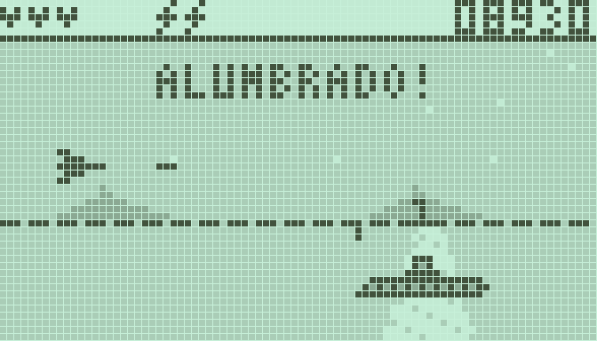
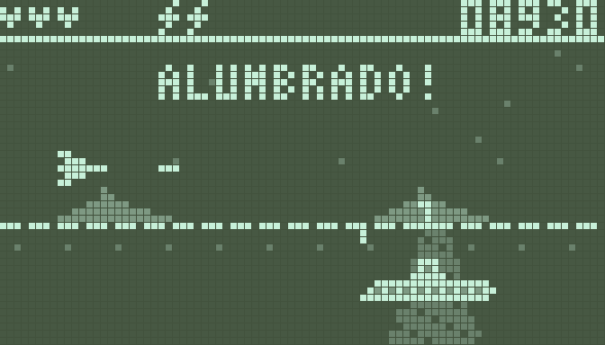
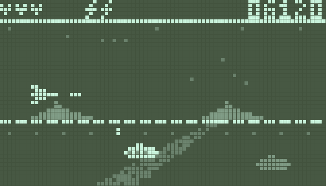
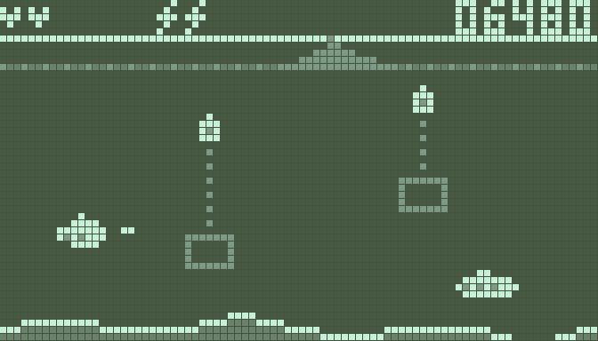
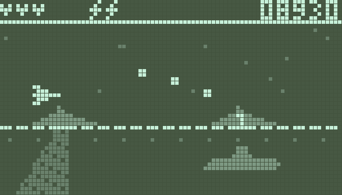
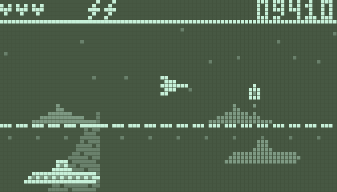
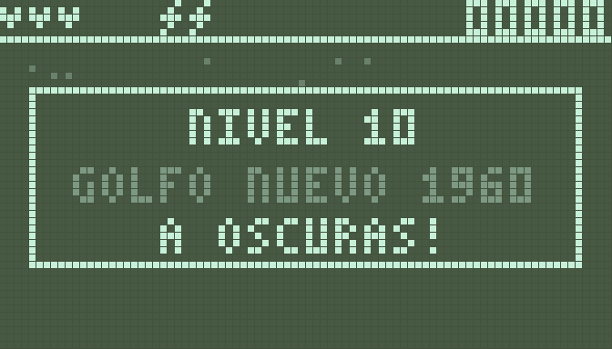
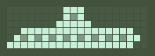
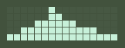

<title>Expediente Golfo Nuevo</title>
<link rel="preconnect" href="https://fonts.googleapis.com">
<link rel="stylesheet" href="https://fonts.googleapis.com/css2?family=Silkscreen&family=Special+Elite&family=Atkinson+Hyperlegible:wght@400;700&display=swap">
<style>
  .golfo-nota { font-family: var(--maquina); color: var(--sello); }
  /* Carpeta de expediente desclasificado: secciones apiladas, cada muestra con su ficha de caso */
  :root {
    --casco: #1d2a3f;
    --hoja: #24334c;
    --bisel: #0f1622;
    --lcd: #c7f0d9;
    --tinta: #42523d;
    --texto: #e6ecf3;
    --suave: #9fb0c6;
    --sello: #e0806a;
    --pixel: "Silkscreen", "Courier New", monospace;
    --maquina: "Special Elite", "Courier New", monospace;
    --cuerpo: "Atkinson Hyperlegible", system-ui, sans-serif;
    color-scheme: dark;
  }
  html, body { background: var(--bisel); }
  body {
    color: var(--texto); font-family: var(--cuerpo); font-size: 16px; line-height: 1.55;
    padding-left: max(16px, env(safe-area-inset-left, 0px));
    padding-right: max(16px, env(safe-area-inset-right, 0px));
    padding-block: 28px 48px;
  }
  main { max-width: 960px; margin: 0 auto; display: grid; gap: 44px; }
  header { display: grid; gap: 10px; }
  .sello {
    justify-self: start; font-family: var(--maquina); color: var(--sello);
    border: 2px solid var(--sello); padding: 2px 10px; letter-spacing: .12em; font-size: 14px;
    transform: rotate(-2deg);
  }
  h1 { font-family: var(--pixel); font-weight: 400; font-size: clamp(30px, 7vw, 48px); margin: 0; line-height: 1; text-wrap: balance; }
  h2 { font-family: var(--pixel); font-weight: 400; font-size: 18px; letter-spacing: .06em; color: var(--lcd); margin: 0 0 6px; }
  p { margin: 0; color: var(--suave); max-width: 68ch; }
  header p { color: var(--texto); }
  section { display: grid; gap: 16px; }
  ul.reglas { margin: 0; padding-left: 1.2em; color: var(--suave); display: grid; gap: 6px; max-width: 72ch; }
  ul.reglas b { color: var(--texto); }

  img.lcd { image-rendering: pixelated; display: block; max-width: 100%; height: auto; border-radius: 4px; }
  .pantalla { background: var(--casco); border-radius: 12px; padding: 10px; }

  .opciones { display: grid; grid-template-columns: repeat(auto-fit, minmax(280px, 1fr)); gap: 18px; }
  .opcion { background: var(--hoja); border-radius: 12px; padding: 12px; display: grid; gap: 10px; align-content: start; min-width: 0; }
  .opcion h3 { margin: 0; font-family: var(--pixel); font-weight: 400; font-size: 15px; display: flex; gap: 10px; align-items: baseline; }
  .letra { background: var(--lcd); color: var(--tinta); padding: 0 7px; border-radius: 4px; }
  .opcion p { font-size: 15px; }

  .fichas { display: grid; grid-template-columns: repeat(auto-fill, minmax(200px, 1fr)); gap: 14px; }
  .ficha { background: var(--hoja); border-radius: 10px; padding: 12px; display: grid; grid-template-rows: 96px auto; gap: 10px; min-width: 0; }
  .ficha .marco { background: var(--lcd); border-radius: 6px; display: grid; place-items: center; overflow: hidden; }
  .ficha img { image-rendering: pixelated; max-height: 80px; max-width: 90%; width: auto; }
  .ficha b { font-family: var(--pixel); font-weight: 400; font-size: 13px; color: var(--texto); display: block; }
  .ficha .caso { font-family: var(--maquina); font-size: 14px; color: var(--suave); display: block; }
  .ficha .antes { font-size: 13px; color: var(--suave); display: block; margin-top: 4px; }
  .ficha .antes em { font-style: normal; color: var(--lcd); }
  .jefes .ficha { grid-template-rows: 150px auto; }
  .jefes .ficha img { max-height: 136px; }

  table { border-collapse: collapse; width: 100%; font-size: 15px; }
  .tabla { overflow-x: auto; }
  th, td { text-align: left; padding: 8px 10px; border-bottom: 1px solid var(--casco); }
  th { font-family: var(--pixel); font-weight: 400; font-size: 12px; color: var(--lcd); letter-spacing: .06em; }
  td:first-child { font-family: var(--pixel); font-size: 13px; white-space: nowrap; }
  td.lcdtxt { font-family: var(--pixel); color: var(--lcd); white-space: nowrap; }

  ol.preguntas { margin: 0; padding-left: 1.4em; display: grid; gap: 8px; color: var(--texto); max-width: 72ch; }
  ol.preguntas li::marker { font-family: var(--pixel); color: var(--lcd); }
  ol.preguntas span { color: var(--suave); }
</style>
<main>
  <header>
    <span class="sello">EXPEDIENTE 84 · NIVEL 10 · PROPUESTA</span>
    <h1>Golfo Nuevo 1960</h1>
    <p>En febrero de 1960 la Armada Argentina pasó semanas cazando de noche a uno o dos «submarinos fantasma» en el Golfo Nuevo, en la Patagonia: buques con reflectores, sonar y cargas de profundidad, y nunca encontraron nada. Este nivel va después de Baikal. Todo está dibujado al tamaño real del juego (84 × 48), ampliado.</p>
  </header>

  <section>
    <h2>LA IDEA: A OSCURAS</h2>
    <ul class="reglas">
      <li><b>De noche, con la pantalla invertida.</b> Como el nivel nocturno de los celulares de antes: al entrar al golfo la pantalla se da vuelta, con fondo oscuro y todo lo jugable en claro. Los tonos siguen con el mismo papel: claro = se toca, medio = hundido e intocable, suave = fondo. Funciona con las cuatro paletas del juego. Los reflectores de los buques son conos limpios que barren el golfo, siempre con el mismo recorrido, para que se puedan aprender.</li>
      <li><b>La luz revela.</b> Lo que va hundido y a oscuras queda en tono medio y es intocable, igual que en Shag Harbour. Cuando un cono lo alumbra pasa a tinta: ahí se le puede disparar, y también te puede dañar.</li>
      <li><b>La Armada no distingue.</b> Desde los buques caen cargas de profundidad. Una columna punteada avisa dónde revientan, y el géiser te daña a ti y a los enemigos.</li>
    </ul>
  </section>

  <section>
    <h2>NORMAL O INVERTIDA</h2>
    <p>La misma escena del jefe, con la propuesta anterior (noche en trama suave) y con la pantalla invertida.</p>
    <div class="opciones">
      <div class="opcion">
        <h3>ANTES · TRAMA</h3>
        <div class="pantalla"></div>
        <p>Fondo claro cubierto de puntos. Se lee, pero la noche se nota poco y la trama ensucia.</p>
      </div>
      <div class="opcion">
        <h3>INVERTIDA</h3>
        <div class="pantalla"></div>
        <p>Fondo oscuro y limpio. El haz del reflector se ve como luz de verdad y lo alumbrado resalta más. <span class="golfo-nota">Mi recomendada.</span></p>
      </div>
    </div>
  </section>

  <section>
    <h2>¿SOBRE EL AGUA O BAJO EL AGUA?</h2>
    <div class="opciones">
      <div class="opcion">
        <h3><span class="letra">A</span> BAJO LOS REFLECTORES</h3>
        <div class="pantalla"></div>
        <p>Vuelas sobre el mar, como en Shag Harbour, con los torpedos del batiscafo. Esperas a que el reflector alumbre a un cilindro y le disparas. El juego trata de leer la luz. <span class="golfo-nota">Mi recomendada.</span></p>
      </div>
      <div class="opcion">
        <h3><span class="letra">B</span> BAJO LAS CARGAS</h3>
        <div class="pantalla"></div>
        <p>Bajas en el batiscafo, como en Bermudas, y la Armada te tira cargas desde arriba sin saber que eres tú. Más esquivar que leer la luz; se parece más al nivel 8.</p>
      </div>
    </div>
  </section>

  <section>
    <h2>EL JEFE: EL SUBMARINO FANTASMA</h2>
    <p>Largo, con torre y sin bandera. Solo recibe daño mientras lo alumbra un reflector; a oscuras asoma el periscopio y dispara.</p>
    <div class="opciones">
      <div class="opcion">
        <div class="pantalla"></div>
        <p><b>Fase 1 · a oscuras.</b> Intocable; dispara desde el periscopio. Hay que esquivar y esperar la luz.</p>
      </div>
      <div class="opcion">
        <div class="pantalla"></div>
        <p><b>Fase 1 · alumbrado.</b> El cono lo toca: pasa a tinta y es tu momento de disparar.</p>
      </div>
      <div class="opcion">
        <div class="pantalla"></div>
        <p><b>Fase 2 · eran dos.</b> Como en los informes de 1960: el reflector alumbra a uno a la vez y caen cargas. En la fase 3 el reflector se apaga y solo los destellos de las cargas lo revelan un instante.</p>
      </div>
      <div class="opcion">
        <div class="pantalla"></div>
        <p>El cartel de inicio. En inglés diría «LEVEL 10 · GOLFO NUEVO 1960 · IN THE DARK!».</p>
      </div>
    </div>
  </section>

  <section>
    <h2>DIBUJOS NUEVOS</h2>
    <div class="fichas">
      <div class="ficha"><div class="marco"></div><div><b>SUBMARINO FANTASMA</b><span class="caso">El jefe · Golfo Nuevo, 1960</span></div></div>
      <div class="ficha"><div class="marco"></div><div><b>CARGA DE PROFUNDIDAD</b><span class="caso">La tiran los buques de la Armada</span></div></div>
      <div class="ficha"><div class="marco"></div><div><b>BUQUE</b><span class="caso">En el horizonte, de fondo; de él sale el reflector</span></div></div>
      <div class="ficha"><div class="marco"></div><div><b>CILINDRO</b><span class="caso">El que ya existe en Bermudas, aquí es el enemigo principal</span></div></div>
    </div>
  </section>

  <section>
    <h2>LO QUE TIENES QUE DECIDIR</h2>
    <ol class="preguntas">
      <li>¿A (sobre el agua, con reflectores) o B (bajo el agua, con cargas)? <span>También se puede mezclar: A con cargas que caen.</span></li>
      <li>¿Te gusta el jefe que solo recibe daño cuando lo alumbran? <span>Las fases 2 y 3 se ajustan después de probarlo.</span></li>
      <li>¿Pantalla invertida o la trama de antes? <span>La invertida se puede usar en todo el nivel o solo durante el jefe.</span></li>
    </ol>
  </section>
</main>
